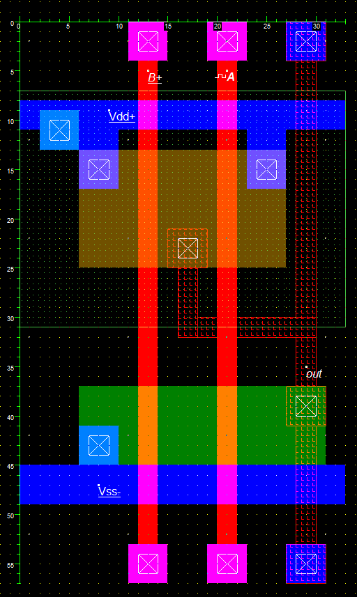

IC Designs
2 Input NAND Gate
This is a 2 Input NAND gate that I created in Microwind. Some things about it:
- 33 by 57 lambda (1881 square lambda)
- 90nm Foundry process
The gate has an approximate propogation delay of ~3ps (measured from center of falling clock edge to center of rising gate output edge)
Note, All files are presented using the MIT License